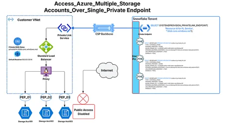
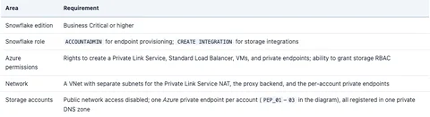
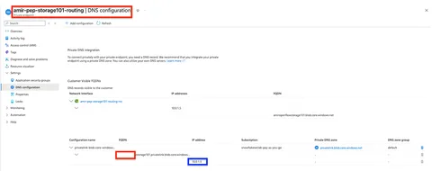
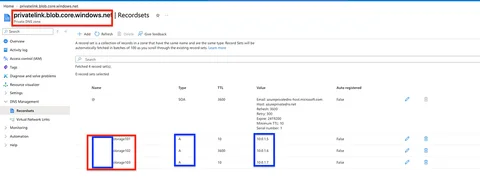
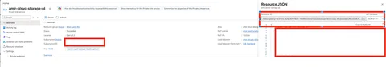
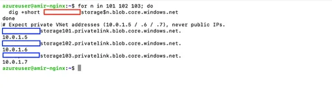
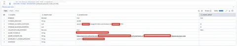
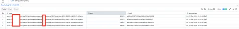
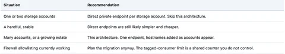

Snowflake 经单一私有端点访问 Azure 存储账户
DataHot 速览
文章讨论客户在 Azure 上运行 Snowflake、数据落在 Azure Blob Storage 的场景；因合规要求，存储账户不能暴露公网，传统把 Snowflake VNet 子网加入防火墙 allowlist 的做法会触发 XrpErrorTaggedTrafficConsumerCountLimitReached。可行方案是改用 Snowflake 出站私有连接，在存储集成上设置 USE_PRIVATELINK_ENDPOINT=TRUE，从而避免 service endpoint 与 tagged-consumer 配额限制。该能力要求 Business Critical 或更高版本，文章第一部分解释问题及为何简单修复会失效。
为什么值得关注：对使用 Snowflake + Azure Blob 外部阶段或 Iceberg 外部卷的数据平台团队，本文给出公私网接入配额限制的根因和官方私有连接方案，涉及合规、网络与版本门槛，工程参考价值高。
本文目录 33 节
- 如何从 Snowflake 外部阶段访问任意数量的 Azure Blob 存储账户——以及它如何扩展。
- 第一部分：问题所在，以及为什么显而易见的修复方案会走到尽头
- 一切始于存储账户上的防火墙：
- 可行的修复方案：停止使用服务终结点
- 简单版本在哪里开始不够用
- 将 N 个存储账户收敛到一个终结点的架构
- 解读该图
- 流量遵循以下路径：
- 一个存储集成还是多个？
- 第二部分：运行手册
- 先决条件
- 步骤 1：Azure — 为每个存储账户配置专用终结点和 DNS
- 步骤 1a。预配专用终结点
- 步骤 1b。预配专用 DNS 区域
- 步骤 2：Azure — 专用链接服务和标准负载均衡器
- 步骤 3：代理 VM — 使用 SNI 路由的 NGINX
- 3a。安装 NGINX 和 stream 模块
- 陷阱——这一条花了真实的时间
- 3b。将 stream 块添加到 /etc/nginx/nginx.conf
- 3c。编写 SNI 路由配置
- 该文件中有三个刻意的选择：
- 3d。验证并重新加载
- 3e。验证 DNS 解析
- 首先检查这一点
- 步骤 4：Snowflake — 预配专用终结点
- 步骤 5：Snowflake — 存储集成
- 步骤 6：端到端验证
- 6a。传输，从代理验证；
- 6b。授权，从 Snowflake 验证
- 6c。阅读代理日志而不被误导
- 在你将其称为生产环境之前
- 审慎决定
- 要点总结
译文
AI 逐段翻译如何从 Snowflake 外部阶段访问任意数量的 Azure Blob 存储账户——以及它如何扩展。
第一部分：问题所在，以及为什么显而易见的修复方案会走到尽头
一切始于存储账户上的防火墙：
一位客户在 Azure 上运行 Snowflake。他们的数据落在 Azure Blob 存储中。合规要求这些存储账户不能从公共互联网访问，因此 公共网络访问 被设置为 已启用，来源为选定的虚拟网络和 IP 地址，并通过虚拟网络规则将 Snowflake 的 VNet 子网加入允许列表。Snowflake 需要通过外部阶段、外部表或 Iceberg 外部卷读取这些数据。
经典的答案是允许 Snowflake 访问。Snowflake 会发布其在该区域自有 VNet 的子网 ID，你将这些子网 ID 作为 虚拟网络规则 添加到存储账户防火墙，存储账户便开始接受这些流量。这方法有效，然后有一天它不再有效，错误如下：
XrpErrorTaggedTrafficConsumerCountLimitReached这是一个 Azure 资源提供程序错误，它告诉你 Azure 中某处的计数器已达到上限。理解 哪一个 计数器是问题的全部关键，因为它决定了你是可以通过支持工单解决，还是需要构建某些东西。
可行的修复方案：停止使用服务终结点
由于该限制附属于服务终结点消费方模型，持久的答案是摆脱该模型。Snowflake 的 出站私有连接 正是这样做的：不再是 Snowflake 从其 VNet 向已被防火墙加入允许列表的公共存储终结点发送流量，而是由 Snowflake 预配一个 专用终结点，接入一条以私有方式到达你网络的路径。流量永远不会触及公共存储终结点，不涉及任何服务终结点，也不会消耗任何已标记的消费方槽位。
你只需在存储集成上设置一个属性即可启用它：
USE_PRIVATELINK_ENDPOINT = TRUE注意：Snowflake 上的所有出站私有连接都需要 Business Critical 或更高版本。这是一个前置门槛，而非功能开关——在设计以下任何内容之前请先确认它。
简单版本在哪里开始不够用
如果你恰好只有一个存储账户，那就完成了。你预配一个直接指向该存储账户的专用终结点，批准它，然后继续。
麻烦从第二个存储账户开始，而且会迅速加剧。一个针对 Azure 存储账户的 Snowflake 专用终结点支持 恰好一个主机名——Snowflake 将每个账户限制为每个 Azure 子资源一个终结点，而 Azure Blob 存储 只有一个子资源 （blob）。
这种算术在两三个存储账户时还能应付，但在大多数企业实际运营的规模下就难以为继。存储往往按业务线、按团队、按环境或按客户进行分区，有时还分布在多个 Azure 租户中——这会使你面对数十甚至数百个不同的存储账户，每个都有自己的主机名，每个都需要单独预配、批准和监控自己的专用终结点。对于第二个存储账户看起来只是一行新增的内容，到第二十个时就变成了终结点泛滥问题。
将 N 个存储账户收敛到一个终结点的架构

解读该图
终结点数量是整个设计的关键，因此值得明确说明：此架构中有 一个 Snowflake 专用终结点，并且无论你添加多少存储账户，它都保持为一个。可扩展的是注册在其上的主机名列表，而不是终结点的数量。
另请注意，该图包含两种不同的专用终结点，它们很容易被混为一谈。Snowflake 侧的单个终结点终止于你的 Private Link Service。PEP_01 到 PEP_03 是你自己 VNet 内的 Azure 专用终结点，每个存储账户一个，它们是代理转发到的目标。
对 SELECT SYSTEM$PROVISION_PRIVATELINK_ENDPOINT(); 的调用被画作“这一个终结点面对所有三个存储账户”的简写；它的确切参数，以及注册第二个和第三个主机名的后续调用，见运行手册的第 4 步和第 5 步。
流量遵循以下路径：
- Snowflake 的执行层解析一个存储主机名，并将 TLS 流量发送到其 专用终结点。
- 该终结点终止于你的 Azure Private Link Service，跨越云骨干网。它从不穿越公共互联网。
- Private Link Service 面对一个 Standard SKU 负载均衡器，后者转发到后端池。
- 后端是一台 运行 NGINX 的代理 VM，处于 TCP 流模式。它从 TLS 握手中读取 SNI 字段并选择目标——不解密任何内容。
- 代理转发到 SNI 所指定存储账户的 每账户专用终结点。
- 每个存储账户保持 公共网络访问禁用，只能通过你 VNet 内的专用终结点访问。
一个存储集成还是多个？
一个立即会出现的问题，因为它看起来像是一个简单的简化：如果一个专用终结点现在覆盖所有存储账户，那么一个存储集成是否也能覆盖它们全部？技术上可以——STORAGE_ALLOWED_LOCATIONS 接受跨多个账户的多个 URL。
建议是 每个存储账户一个存储集成，原因是 Azure 租户关系而非网络。一个存储集成恰好绑定到 一个 Azure 租户——单个 AZURE_TENANT_ID——因此它只能访问位于该租户内的账户。一旦你的存储账户跨越多个租户，单个集成就无法覆盖它们，你无论如何都得拆分。从每个账户一个开始，意味着你永远不必在构建中途才发现该边界。
重要的结构性要点是，这是一个 自由的 选择。专用终结点在网络层运行并匹配主机名；存储集成在身份层运行。两者相互独立，因此 N 个存储集成可以共享 1 个专用终结点。你获得了按账户的访问范围限定，而无需预配按账户的终结点。
第二部分：运行手册
先决条件

步骤 1：Azure — 为每个存储账户配置专用终结点和 DNS
步骤 1a。预配专用终结点
每个存储账户都在代理的 VNet 中获得自己的专用终结点，使用 blob 子资源。

步骤 1b。预配专用 DNS 区域
将它们全部注册到一个名为 privatelink.blob.core.windows.net 的单个专用 DNS 区域中，并链接到该 VNet，以便代理将每个存储主机名解析为其专用 IP。

步骤 2：Azure — 专用链接服务和标准负载均衡器
专用链接服务必须置于一个 标准 SKU 负载均衡器之前，其后端为 VM 或 VM 规模集。它不能直接以托管服务、应用程序网关或本地主机为目标。容易被忽略的要求：
- 承载专用链接服务 NAT 配置的子网必须设置 private_link_service_network_policies_enabled = false。
- 代理 VM 的 NIC 需要启用 IP 转发。
- 代理子网 NSG 必须允许来自 AzureLoadBalancer 服务标记的入站 443，否则健康探测将失败，后端会被标记为不可用。
记录专用链接服务的 资源 ID——Snowflake 在步骤 4 中需要逐字使用它。

步骤 3：代理 VM — 使用 SNI 路由的 NGINX
Ubuntu LTS 在这里是合理的默认选择：stream 模块已打包，因此无需从源代码编译。
3a。安装 NGINX 和 stream 模块
sudo apt-get update
sudo apt-get install -y nginx libnginx-mod-stream陷阱——这一条花了真实的时间
不要将 nginx -V | grep stream_ssl_preread 视为模块可用的证据。该输出报告的是上游构建的 编译标志。在 Debian 和 Ubuntu 上，stream 模块作为 单独的软件包 发布，并且是动态加载的。该标志可能存在，而模块却不存在，你会在配置测试时发现这种情况：
nginx: [emerg] unknown directive "stream" in /etc/nginx/nginx.conf改为验证模块是否确实可加载：
ls /etc/nginx/modules-enabled/ | grep stream
# Expect: 50-mod-stream.conf3b。将 stream 块添加到 /etc/nginx/nginx.conf
两条放置规则很重要。include /etc/nginx/modules-enabled/*.conf; 必须出现在 main 上下文 中，位于 stream 块之前，因为正是它加载了 ngx_stream_module.so。而且 stream 是一个顶层块——是 http 的同级块，绝不能嵌套在其中。
user www-data;
worker_processes auto;
pid /run/nginx.pid;
error_log /var/log/nginx/error.log;
include /etc/nginx/modules-enabled/*.conf;events {
worker_connections 768;
}
http {
sendfile on;
tcp_nopush on;
types_hash_max_size 2048;
include /etc/nginx/mime.types;
default_type application/octet-stream;
ssl_protocols TLSv1.2 TLSv1.3;
ssl_prefer_server_ciphers on;
access_log /var/log/nginx/access.log;
gzip on;
include /etc/nginx/conf.d/*.conf;
include /etc/nginx/sites-enabled/*;
}
stream {
include /etc/nginx/stream.d/*.conf;
}
3c。编写 SNI 路由配置
sudo mkdir -p /etc/nginx/stream.d
sudo tee /etc/nginx/stream.d/blob.conf >/dev/null <<'EOF'
error_log /var/log/nginx/stream_error.log warn;
log_format sni '$remote_addr [$time_local] sni="$ssl_preread_server_name" '
'upstream="$upstream_addr" bytes_sent=$bytes_sent '
'bytes_recv=$bytes_received session_time=$session_time';
access_log /var/log/nginx/stream_access.log sni;
map $ssl_preread_server_name $storage_backend {
default "";
storage101.blob.core.windows.net acct1;
storage102.blob.core.windows.net acct2;
storage103.blob.core.windows.net acct3;
}
upstream acct1 { server 10.0.1.5:443; }
upstream acct2 { server 10.0.1.6:443; }
upstream acct3 { server 10.0.1.7:443; }
server {
listen 443;
ssl_preread on;
proxy_pass $storage_backend;
proxy_connect_timeout 10s;
proxy_timeout 600s;
}
EOF该文件中有三个刻意的选择：
- default "" 使代理默认拒绝。未识别的 SNI 会被丢弃，而不是转发到任意位置。这是防止代理变成开放中继的安全控制。
- proxy_timeout 600s 此默认值将支持大型 COPY INTO 保持连接打开的时间远长于 Web 请求。
- The log_format 的存在纯粹是为了诊断。$ssl_preread_server_name 与 $upstream_addr 放在一起，正是这一点使路由故障能在一行中清晰可读。
3d。验证并重新加载
sudo nginx -t && sudo systemctl reload nginx3e。验证 DNS 解析
代理 VM 必须使用 Azure 的平台解析器 168.63.129.16 才能使其正常工作——正是它查询所链接的专用区域。在继续之前，从代理验证解析：
for n in 101 102 103; do
dig +short storage$n.blob.core.windows.net
done
# Expect private VNet addresses (10.0.1.5 / .6 / .7), never public IPs.
首先检查这一点
如果其中任何一个解析为公共地址，则专用 DNS 区域未链接到代理的 VNet，或者 VM 使用了不转发到 168.63.129.16 的自定义解析器。在改动 NGINX 之前先修复 DNS——否则每个下游症状都会产生误导。
步骤 4：Snowflake — 预配专用终结点
将终结点指向专用链接服务资源 ID：
USE ROLE ACCOUNTADMIN;
SELECT SYSTEM$PROVISION_PRIVATELINK_ENDPOINT(
'/subscriptions/14d81034-8c4d-40g7-9081-18c9k69244e4/resourceGroups/Amir-East2-RG/providers/Microsoft.Network/privateLinkServices/amir-plsvc-storage-pl', ------you get this from Privatelink Service in your Azure Console
'*.blob.core.windows.net'------Covers "n" storage accounts
);在 Azure 中的专用链接服务上批准该连接，然后确认 Snowflake 显示其已获批准：
SELECT SYSTEM$GET_PRIVATELINK_ENDPOINTS_INFO();
-- Wait for status = APPROVED before continuing.通配符覆盖的每个主机名也必须存在于 map 中的 NGINX 步骤 3c，并按照 步骤 3e 进行专用解析。这些列表必须一致；通配符将流量引导到你的代理，但 map 中缺失的主机名会在那里被默认拒绝规则丢弃。
步骤 5：Snowflake — 存储集成
按照第一部分中的推理，每个存储账户一个集成。对 102 和 103 重复此操作。
CREATE OR REPLACE STORAGE INTEGRATION outbound_private_link_int_101
TYPE = EXTERNAL_STAGE
STORAGE_PROVIDER = AZURE
AZURE_TENANT_ID = 'a1b2c3d4-5e6f-4a7b-8c9d-0e1f2a3b4c5d'----Your Tenant
STORAGE_ALLOWED_LOCATIONS =
('azure://storage101.blob.core.windows.net/customer101/')--Your storage account
USE_PRIVATELINK_ENDPOINT = TRUE
ENABLED = TRUE;然后，对每个集成：
DESC STORAGE INTEGRATION outbound_private_link_int_101;
-- Open AZURE_CONSENT_URL in a browser and grant tenant consent.
-- Note AZURE_MULTI_TENANT_APP_NAME.
同意会在你的 Azure AD 租户中创建服务主体。仅同意本身不授予任何权限——你还必须在目标存储账户上分配 RBAC：
- Storage Blob Data Reader 用于只读阶段和外部表
- Storage Blob Data Contributor 如果 Snowflake 需要写入（卸载、Iceberg 外部卷）
步骤 6：端到端验证
6a。传输，从代理验证；
确认代理路由正确，并且 Azure 使用自己的证书进行应答：
openssl s_client -connect 127.0.0.1:443 \
-servername storage101.blob.core.windows.net </dev/null 2>&1 \
| grep -E 'subject=|issuer='6b。授权，从 Snowflake 验证
为每个存储账户创建一个阶段并列出它。在这里阶段值得多创建一个对象：LIST 针对阶段会演练完整路径，包括服务主体的 RBAC，而这正是最可能配置错误的部分。
CREATE OR REPLACE STAGE stage_storage101
STORAGE_INTEGRATION = outbound_private_link_int_101
URL = 'azure://storage101.blob.core.windows.net/customer101/';
LIST @stage_storage101;
仔细阅读结果
成功的 LIST 返回文件行，对于空容器则返回零行。它绝不能返回的是授权失败。代理正常工作仅证明传输——403 意味着 SNI 路由成功，缺失的部分是 步骤 5 中的 RBAC 或租户同意。不要把干净的 NGINX 日志当作访问可用的证据。
6c。阅读代理日志而不被误导
sudo grep -v '^168\.63\.129\.16' /var/log/nginx/stream_access.log | tail -20所有三个主机名都从专用链接服务 NAT 地址 10.0.2.6 到达同一个终结点，每个都通过 SNI 路由到各自的按账户上游。
源地址是专用链接服务 NAT IP，而不是 Snowflake 地址——NAT 重写是预期行为，并确认流量通过专用链接服务而非其他路径到达。
在你将其称为生产环境之前
单个代理 VM 对于概念验证来说是可以的，但在生产环境中不可接受。每个存储账户的每次外部阶段读取都会经过它。请将其替换为 VM 规模集，跨负载均衡器后端池中的可用性区域。
审慎决定

要点总结
- 故障是 每个 VNet 200 个 Microsoft.Storage 标记流量使用方 —— 是在 Snowflake 的共享 VNet 上计算的，而不是在你的存储账户上。这是 Azure 的硬性限制，无法提高。
- USE_PRIVATELINK_ENDPOINT = TRUE 完全绕过了服务终结点模型，并且不消耗任何使用方槽位。需要 Business Critical 版本。
- 在一个终结点上使用多个主机名仅适用于 客户管理的 Private Link 服务，绝不适用于 Azure 存储账户 —— 并且对于 Private Link 服务，单个 *.blob.core.windows.net 通配符即可覆盖所有主机名。
- SNI 在私有终结点 → Private Link 服务 → 标准负载均衡器 → 代理的链路上得以保留，因此使用 ssl_preread 进行主机名路由是可行的。
- 终结点位于网络层，而集成位于身份层，因此 N 个存储集成可以共享 1 个终结点 —— 在无需按业务线设置终结点的情况下保持按业务线隔离。
- 在 Debian 和 Ubuntu 上，nginx -V 报告 --with-stream_ssl_preread_module 并不意味着该模块已加载。请确认 /etc/nginx/modules-enabled/50-mod-stream.conf 存在。
通过单个私有终结点访问 Azure 存储账户 最初发布于 Snowflake Builders Blog: Data Engineers, App Developers, AI, & Data Science（Medium 平台），人们正在那里通过高亮和回应此故事来继续对话。
这篇内容对你有用吗？
反馈只用于改善内容筛选，不等同于收藏